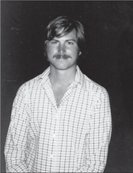

THE MAC IS BORN
You Say You Want a Revolution

Jobs in 1982
Jef Raskin was the type of character who could enthrall Steve Jobs—or annoy him. As it turned out, he did both. A philosophical guy who could be both playful and ponderous, Raskin had studied computer science, taught music and visual arts, conducted a chamber opera company, and organized guerrilla theater. His 1967 doctoral thesis at U.C. San Diego argued that computers should have graphical rather than text-based interfaces. When he got fed up with teaching, he rented a hot air balloon, flew over the chancellor's house, and shouted down his decision to quit.
When Jobs was looking for someone to write a manual for the Apple II in 1976, he called Raskin, who had his own little consulting firm. Raskin went to the garage, saw Wozniak beavering away at a workbench, and was convinced by Jobs to write the manual for $50. Eventually he became the manager of Apple's publications department. One of Raskin's dreams was to build an inexpensive computer for the masses, and in 1979 he convinced Mike Markkula to put him in charge of a small development project code-named "Annie" to do just that. Since Raskin thought it was sexist to name computers after women, he redubbed the project in honor of his favorite type of apple, the McIntosh. But he changed the spelling in order not to conflict with the name of the audio equipment maker McIntosh Laboratory. The proposed computer became known as the Macintosh.
Raskin envisioned a machine that would sell for $1,000 and be a simple appliance, with screen and keyboard and computer all in one unit. To keep the cost down, he proposed a tiny five-inch screen and a very cheap (and underpowered) microprocessor, the Motorola 6809. Raskin fancied himself a philosopher, and he wrote his thoughts in an ever-expanding notebook that he called "The Book of Macintosh." He also issued occasional manifestos. One of these was called "Computers by the Millions," and it began with an aspiration: "If personal computers are to be truly personal, it will have to be as likely as not that a family, picked at random, will own one."
Throughout 1979 and early 1980 the Macintosh project led a tenuous existence. Every few months it would almost get killed off, but each time Raskin managed to cajole Markkula into granting clemency. It had a research team of only four engineers located in the original Apple office space next to the Good Earth restaurant, a few blocks from the company's new main building. The work space was filled with enough toys and radio-controlled model airplanes (Raskin's passion) to make it look like a day care center for geeks. Every now and then work would cease for a loosely organized game of Nerf ball tag. Andy Hertzfeld recalled, "This inspired everyone to surround their work area with barricades made out of cardboard, to provide cover during the game, making part of the office look like a cardboard maze."
The star of the team was a blond, cherubic, and psychologically intense self-taught young engineer named Burrell Smith, who worshipped the code work of Wozniak and tried to pull off similar dazzling feats. Atkinson discovered Smith working in Apple's service department and, amazed at his ability to improvise fixes, recommended him to Raskin. Smith would later succumb to schizophrenia, but in the early 1980s he was able to channel his manic intensity into weeklong binges of engineering brilliance.
Jobs was enthralled by Raskin's vision, but not by his willingness to make compromises to keep down the cost. At one point in the fall of 1979 Jobs told him instead to focus on building what he repeatedly called an "insanely great" product. "Don't worry about price, just specify the computer's abilities," Jobs told him. Raskin responded with a sarcastic memo. It spelled out everything you would want in the proposed computer: a high-resolution color display, a printer that worked without a ribbon and could produce graphics in color at a page per second, unlimited access to the ARPA net, and the capability to recognize speech and synthesize music, "even simulate Caruso singing with the Mormon tabernacle choir, with variable reverberation." The memo concluded, "Starting with the abilities desired is nonsense. We must start both with a price goal, and a set of abilities, and keep an eye on today's and the immediate future's technology." In other words, Raskin had little patience for Jobs's belief that you could distort reality if you had enough passion for your product.
Thus they were destined to clash, especially after Jobs was ejected from the Lisa project in September 1980 and began casting around for someplace else to make his mark. It was inevitable that his gaze would fall on the Macintosh project. Raskin's manifestos about an inexpensive machine for the masses, with a simple graphic interface and clean design, stirred his soul. And it was also inevitable that once Jobs set his sights on the Macintosh project, Raskin's days were numbered. "Steve started acting on what he thought we should do, Jef started brooding, and it instantly was clear what the outcome would be," recalled Joanna Hoffman, a member of the Mac team.
The first conflict was over Raskin's devotion to the underpowered Motorola 6809 microprocessor. Once again it was a clash between Raskin's desire to keep the Mac's price under $1,000 and Jobs's determination to build an insanely great machine. So Jobs began pushing for the Mac to switch to the more powerful Motorola 68000, which is what the Lisa was using. Just before Christmas 1980, he challenged Burrell Smith, without telling Raskin, to make a redesigned prototype that used the more powerful chip. As his hero Wozniak would have done, Smith threw himself into the task around the clock, working nonstop for three weeks and employing all sorts of breathtaking programming leaps. When he succeeded, Jobs was able to force the switch to the Motorola 68000, and Raskin had to brood and recalculate the cost of the Mac.
There was something larger at stake. The cheaper microprocessor that Raskin wanted would not have been able to accommodate all of the gee-whiz graphics—windows, menus, mouse, and so on—that the team had seen on the Xerox PARC visits. Raskin had convinced everyone to go to Xerox PARC, and he liked the idea of a bitmapped display and windows, but he was not as charmed by all the cute graphics and icons, and he absolutely detested the idea of using a point-and-click mouse rather than the keyboard. "Some of the people on the project became enamored of the quest to do everything with the mouse," he later groused. "Another example is the absurd application of icons. An icon is a symbol equally incomprehensible in all human languages. There's a reason why humans invented phonetic languages."
Raskin's former student Bill Atkinson sided with Jobs. They both wanted a powerful processor that could support whizzier graphics and the use of a mouse. "Steve had to take the project away from Jef," Atkinson said. "Jef was pretty firm and stubborn, and Steve was right to take it over. The world got a better result."
The disagreements were more than just philosophical; they became clashes of personality. "I think that he likes people to jump when he says jump," Raskin once said. "I felt that he was untrustworthy, and that he does not take kindly to being found wanting. He doesn't seem to like people who see him without a halo." Jobs was equally dismissive of Raskin. "Jef was really pompous," he said. "He didn't know much about interfaces. So I decided to nab some of his people who were really good, like Atkinson, bring in some of my own, take the thing over and build a less expensive Lisa, not some piece of junk."
Some on the team found Jobs impossible to work with. "Jobs seems to introduce tension, politics, and hassles rather than enjoying a buffer from those distractions," one engineer wrote in a memo to Raskin in December 1980. "I thoroughly enjoy talking with him, and I admire his ideas, practical perspective, and energy. But I just don't feel that he provides the trusting, supportive, relaxed environment that I need."
But many others realized that despite his temperamental failings, Jobs had the charisma and corporate clout that would lead them to "make a dent in the universe." Jobs told the staff that Raskin was just a dreamer, whereas he was a doer and would get the Mac done in a year. It was clear he wanted vindication for having been ousted from the Lisa group, and he was energized by competition. He publicly bet John Couch $5,000 that the Mac would ship before the Lisa. "We can make a computer that's cheaper and better than the Lisa, and get it out first," he told the team.
Jobs asserted his control of the group by canceling a brown-bag lunch seminar that Raskin was scheduled to give to the whole company in February 1981. Raskin happened to go by the room anyway and discovered that there were a hundred people there waiting to hear him; Jobs had not bothered to notify anyone else about his cancellation order. So Raskin went ahead and gave a talk.
That incident led Raskin to write a blistering memo to Mike Scott, who once again found himself in the difficult position of being a president trying to manage a company's temperamental cofounder and major stockholder. It was titled "Working for/with Steve Jobs," and in it Raskin asserted:
He is a dreadful manager... . I have always liked Steve, but I have found it impossible to work for him... . Jobs regularly misses appointments. This is so well-known as to be almost a running joke... . He acts without thinking and with bad judgment... . He does not give credit where due... . Very often, when told of a new idea, he will immediately attack it and say that it is worthless or even stupid, and tell you that it was a waste of time to work on it. This alone is bad management, but if the idea is a good one he will soon be telling people about it as though it was his own.
That afternoon Scott called in Jobs and Raskin for a showdown in front of Markkula. Jobs started crying. He and Raskin agreed on only one thing: Neither could work for the other one. On the Lisa project, Scott had sided with Couch. This time he decided it was best to let Jobs win. After all, the Mac was a minor development project housed in a distant building that could keep Jobs occupied away from the main campus. Raskin was told to take a leave of absence. "They wanted to humor me and give me something to do, which was fine," Jobs recalled. "It was like going back to the garage for me. I had my own ragtag team and I was in control."
Raskin's ouster may not have seemed fair, but it ended up being good for the Macintosh. Raskin wanted an appliance with little memory, an anemic processor, a cassette tape, no mouse, and minimal graphics. Unlike Jobs, he might have been able to keep the price down to close to $1,000, and that may have helped Apple win market share. But he could not have pulled off what Jobs did, which was to create and market a machine that would transform personal computing. In fact we can see where the road not taken led. Raskin was hired by Canon to build the machine he wanted. "It was the Canon Cat, and it was a total flop," Atkinson said. "Nobody wanted it. When Steve turned the Mac into a compact version of the Lisa, it made it into a computing platform instead of a consumer electronic device."1
A few days after Raskin left, Jobs appeared at the cubicle of Andy Hertzfeld, a young engineer on the Apple II team, who had a cherubic face and impish demeanor similar to his pal Burrell Smith's. Hertzfeld recalled that most of his colleagues were afraid of Jobs "because of his spontaneous temper tantrums and his proclivity to tell everyone exactly what he thought, which often wasn't very favorable." But Hertzfeld was excited by him. "Are you any good?" Jobs asked the moment he walked in. "We only want really good people working on the Mac, and I'm not sure you're good enough." Hertzfeld knew how to answer. "I told him that yes, I thought that I was pretty good."
Jobs left, and Hertzfeld went back to his work. Later that afternoon he looked up to see Jobs peering over the wall of his cubicle. "I've got good news for you," he said. "You're working on the Mac team now. Come with me."
Hertzfeld replied that he needed a couple more days to finish the Apple II product he was in the middle of. "What's more important than working on the Macintosh?" Jobs demanded. Hertzfeld explained that he needed to get his Apple II DOS program in good enough shape to hand it over to someone. "You're just wasting your time with that!" Jobs replied. "Who cares about the Apple II? The Apple II will be dead in a few years. The Macintosh is the future of Apple, and you're going to start on it now!" With that, Jobs yanked out the power cord to Hertzfeld's Apple II, causing the code he was working on to vanish. "Come with me," Jobs said. "I'm going to take you to your new desk." Jobs drove Hertzfeld, computer and all, in his silver Mercedes to the Macintosh offices. "Here's your new desk," he said, plopping him in a space next to Burrell Smith. "Welcome to the Mac team!" The desk had been Raskin's. In fact Raskin had left so hastily that some of the drawers were still filled with his flotsam and jetsam, including model airplanes.
Jobs's primary test for recruiting people in the spring of 1981 to be part of his merry band of pirates was making sure they had a passion for the product. He would sometimes bring candidates into a room where a prototype of the Mac was covered by a cloth, dramatically unveil it, and watch. "If their eyes lit up, if they went right for the mouse and started pointing and clicking, Steve would smile and hire them," recalled Andrea Cunningham. "He wanted them to say ‘Wow!'"
Bruce Horn was one of the programmers at Xerox PARC. When some of his friends, such as Larry Tesler, decided to join the Macintosh group, Horn considered going there as well. But he got a good offer, and a $15,000 signing bonus, to join another company. Jobs called him on a Friday night. "You have to come into Apple tomorrow morning," he said. "I have a lot of stuff to show you." Horn did, and Jobs hooked him. "Steve was so passionate about building this amazing device that would change the world," Horn recalled. "By sheer force of his personality, he changed my mind." Jobs showed Horn exactly how the plastic would be molded and would fit together at perfect angles, and how good the board was going to look inside. "He wanted me to see that this whole thing was going to happen and it was thought out from end to end. Wow, I said, I don't see that kind of passion every day. So I signed up."
Jobs even tried to reengage Wozniak. "I resented the fact that he had not been doing much, but then I thought, hell, I wouldn't be here without his brilliance," Jobs later told me. But as soon as Jobs was starting to get him interested in the Mac, Wozniak crashed his new single-engine Beechcraft while attempting a takeoff near Santa Cruz. He barely survived and ended up with partial amnesia. Jobs spent time at the hospital, but when Wozniak recovered he decided it was time to take a break from Apple. Ten years after dropping out of Berkeley, he decided to return there to finally get his degree, enrolling under the name of Rocky Raccoon Clark.
In order to make the project his own, Jobs decided it should no longer be code-named after Raskin's favorite apple. In various interviews, Jobs had been referring to computers as a bicycle for the mind; the ability of humans to create a bicycle allowed them to move more efficiently than even a condor, and likewise the ability to create computers would multiply the efficiency of their minds. So one day Jobs decreed that henceforth the Macintosh should be known instead as the Bicycle. This did not go over well. "Burrell and I thought this was the silliest thing we ever heard, and we simply refused to use the new name," recalled Hertzfeld. Within a month the idea was dropped.
By early 1981 the Mac team had grown to about twenty, and Jobs decided that they should have bigger quarters. So he moved everyone to the second floor of a brown-shingled, two-story building about three blocks from Apple's main offices. It was next to a Texaco station and thus became known as Texaco Towers. In order to make the office more lively, he told the team to buy a stereo system. "Burrell and I ran out and bought a silver, cassette-based boom box right away, before he could change his mind," recalled Hertzfeld.
Jobs's triumph was soon complete. A few weeks after winning his power struggle with Raskin to run the Mac division, he helped push out Mike Scott as Apple's president. Scotty had become more and more erratic, alternately bullying and nurturing. He finally lost most of his support among the employees when he surprised them by imposing a round of layoffs that he handled with atypical ruthlessness. In addition, he had begun to suffer a variety of afflictions, ranging from eye infections to narcolepsy. When Scott was on vacation in Hawaii, Markkula called together the top managers to ask if he should be replaced. Most of them, including Jobs and John Couch, said yes. So Markkula took over as an interim and rather passive president, and Jobs found that he now had full rein to do what he wanted with the Mac division.